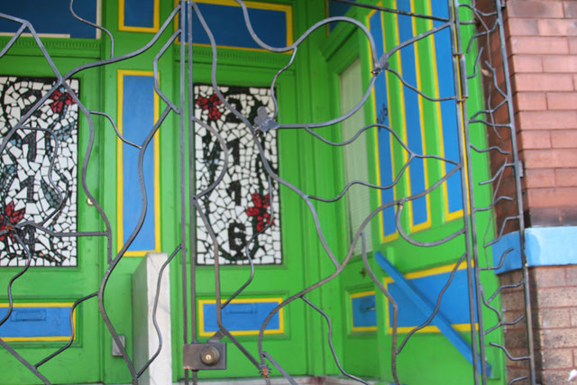
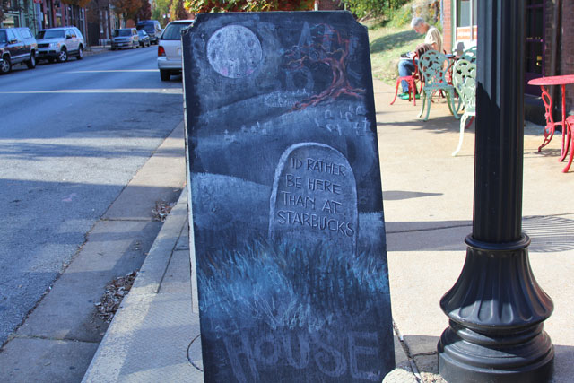
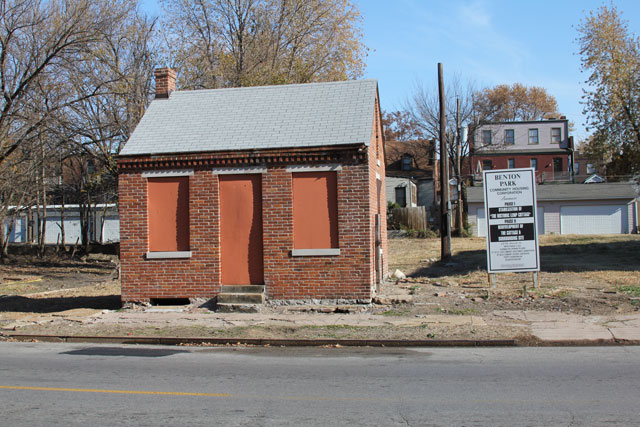
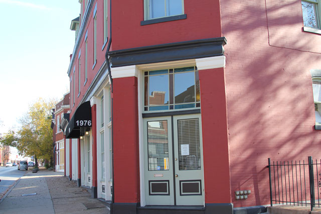
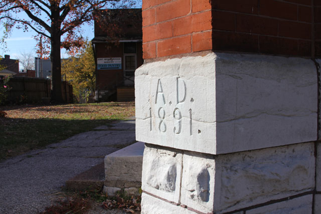

A walk around south St. Louis
"You know," Pastor Mary Albert declared, "The first night I moved to South St. Louis, I was robbed at gun point."
The two of us immediately became concerned. "What?" Max exclaimed. "Were you okay?"
"Oh, I was fine." Pastor Albert reassured us. "But after that I developed an acute sense of awareness to my surroundings. But that was 12 yars ago, the neighborhood is a lot safer now. Now the community is very diverse racially, one of the things I really like about living here."
Pastor Albert's words were true, especially in this instance. She was taking the two of us on a tour of her church's neighborhood. The weather was surprisingly cooperative as the sun was out, but a cold wind chill made its presence known as a constant reminder that our coats should remain on our backs.
We walked further past a home which had been painted recently. "This home is owned by a lady from Brazil." Pastor Albert informed.
"It shows." Richard quipped. And he was right. The house trim had been painted over with the distinct colors of blue, yellow, and green, which provided a much needed reprieve from the monotonous red brick that had been seen in the prior homes.

"I like it." Jack, a local photographer who had joined us on our neighborhood walk for his own research, said in accord. "It's a break from the regular shotgun houses we've seen."
"Shotgun Houses?" Richard inquired.
"If you can point a shotgun through it, and a bullet goes through the entire house, then it's a shotgun house." Jack stated matter-of-factly.
Pastor Albert was taking us on a tour of the neighborhood which is served by Epiphany UCC, the church she worked at. The tour had a purpose: the Urban Mission Experience, a summer workcamp program which brings working youth to St. Louis every week, works in the neighborhood. They become familiar with the same streets that Pastor Albert walks and works in every day.
We pressed on.
"This coffee shop is a favorite of mine." Mary stated.
No sooner had the phrase left her mouth than her other companions swarmed on the outside of the coffee shop with photos. The quick clicking of shutters had become common place on this walk, and the photographers seemed little interested in what else Mary had to say.

Max, who was instead filming, kept Mary's interest. "Why is it your favorite?"
"Well," Mary started, "I've always enjoyed the atmosphere, and the owner is a close friend of mine. Her and I go back many years... probably earlier than before you were born." She laughed nervously.
"That's cool." Max stated cooly and continued to film, nearly tripping over Richard, who had knelt down to obtain a certain shot.
A glimmer then flashed across Mary's eyes. "This reminds me... I once married a homeless couple."
Mary now had the attention of the trio she traveled with. "You did what?" Richard inquired.
"I married a homeless couple." Mary repeated as she continued down the street, signaling that she was tired with watching three people gather photos. "You see, they were in a relationship, Marvin and Maria. Marvin was on disability and Maria was on the streets, but they loved each other.
"But loving one another doesn't get you the same room in homeless shelters." Mary continued, her tone changing. "You have to be married for that to happen. So, they were at the food pantry one day, came up to me and asked me if I could marry them."
"And you did it right there? Without a consultation?" Jack pressed.
"Normally, I would have." Mary defended. "But I knew the two, and they were under extreme circumstances. This would give them the best chance to be happy, even if their surroundings weren't ideal."
"So... you just married them right there in the food pantry?" Richard asked, confused.
"We were in my office." Mary responded. "I went downstairs to the food pantry and grabbed two of the volunteers to be witnesses... Ah, here is the Lemp Brewery building... It is no longer in use. They use to keep their horses across the street, but they closed down decades ago... It's really sad to see it."
"Oh yes," Jack added. "I remember all of those initiatives to try and do something with the building, but nothing ever worked out."
"So, it just goes unused now?" Richard asked.
"Unfortunately, yes."
We pressed on.
"So, what happened to them?" Max inquired.
"To Marvin and Maria? Well, the owner of the coffee shop took them in for a little bit. Which is what reminded me of them. They stayed there for a while, but eventually, they wore out their welcome. And were back on the streets... Oh, this house... This was a house on the underground railroad... One of the better stories of race relations in this area."

"I never knew that about this house." Jack stated.
"There is so much history here..." Mary refocused her thoughts. "Anyways, once Marvin and Maria were back on the streets, I offered them the front porch of the house you two are currently sleeping in" She motioned to the two of us.
Jack was thrown off. "They slept outside?"
"Oh yes," Mary reassured. "They were happy to just have an area to call their own. They didn't have any possessions, so they didn't have to worry about anything getting stolen. And it was working out for everyone, until the colder months came in."
A cold breeze ran up our backs.
"What then?" Richard asked.
"Just a minute, according to neighborhood lore this building is famous." Mary stated.
"How so?" Richard said confused, upset that his question wasn't answered.
"The plan to assassinate Martin Luther King was formulated here."

"It was once a bar." Mary continued. "The owners had roots in the boothill of Missouri, which is near Memphis... Once the bar closed to its other patrons, they formulated the plan here, and took advantage of their relatives and friends near Memphis."
We all stood in silence in front of the bar before moving on.
A park was nearby.
"This is Benton Park, which is what the neighborhood is named after." Mary informed us.
We stood in silence over the park and took it all in.
"So, what happened to Marvin and Maria?" Max pressed.
"Oh!" Mary remembered. "Well, I decided to meet with our church council about bringing them into the house. I thought that we could agree on an appropriate time frame. I asked a member, how long it would take if we took them in before they got back on their feet. I was thinking three days."
"How many did they say?" Richard said, getting more courageous.
"Well, he said three months would be best."
Our eyes widened.
Mary continued. "I had the same reaction. I thought that no way would the church council agree to three months. I figured that the thought of bringing in two homeless individuals into a place would be a deal breaker for everyone."
She paused and happily sighed.
"But it wasn't. They all wanted them to come in for 3 months... So when we went outside to bring them in we said 'We need to talk to you.' They immediately reached for their bags and said 'We understand. We can find somewhere else to stay.' And we told them 'No. We're bringing you into the house.'
"They were ecstatic." Mary beamed. "They were so happy about the chance to have their own place to sleep and call their own. Maria even said the most insightful thing."
Mary paused, looked down at the ground, and a smile crept up on her face.
"She said that they were like Mary and Joseph in Bethlehem. Except this time, there was room at the inn."

Categories: Blog, On The Road
Reader Comments
2 commentsA walk around St. Louis
From: Margret Stokes, 11/18/10 09:04 AM
A wonderful blog that exemplifies the Christian spirit. Would that more people would demonstrate such Extravagant Welcome. Great Pictures!!
walking tour
From: kime, 11/16/10 07:07 AM
1 - I live in a shotgun house!
2 - I love the photos that go along with the story!